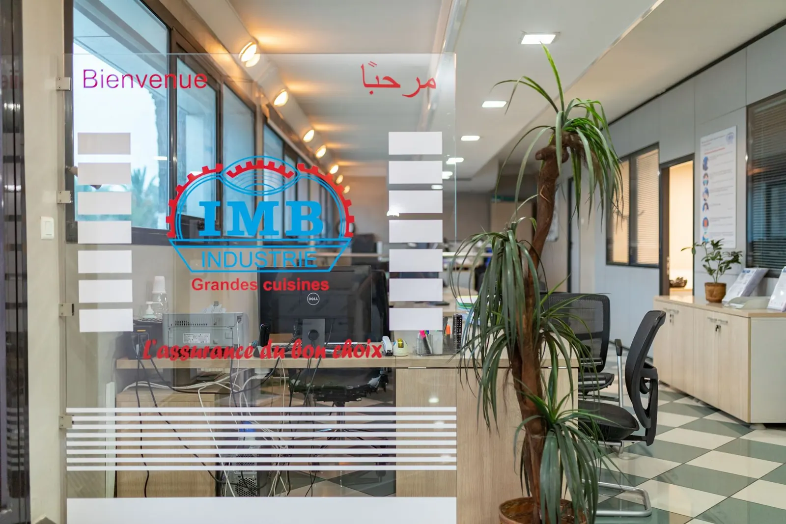
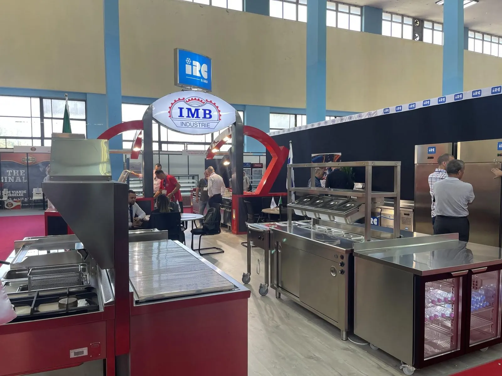
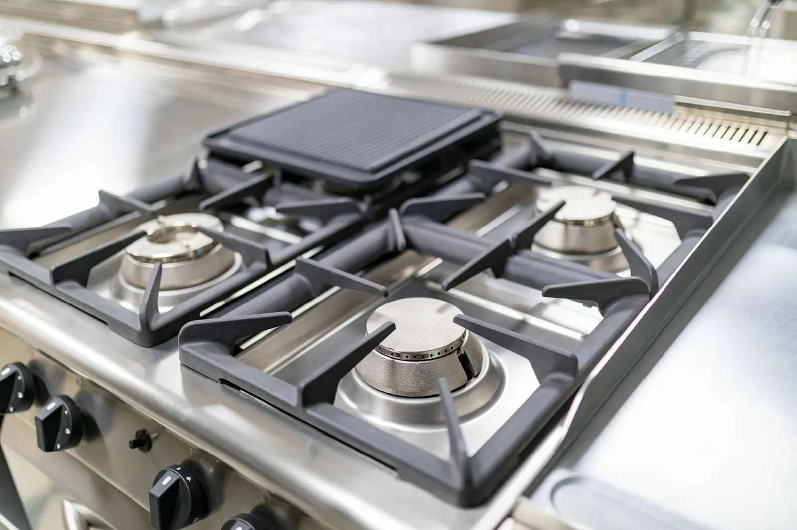
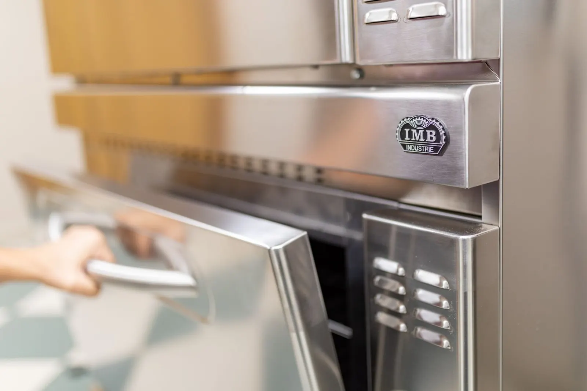
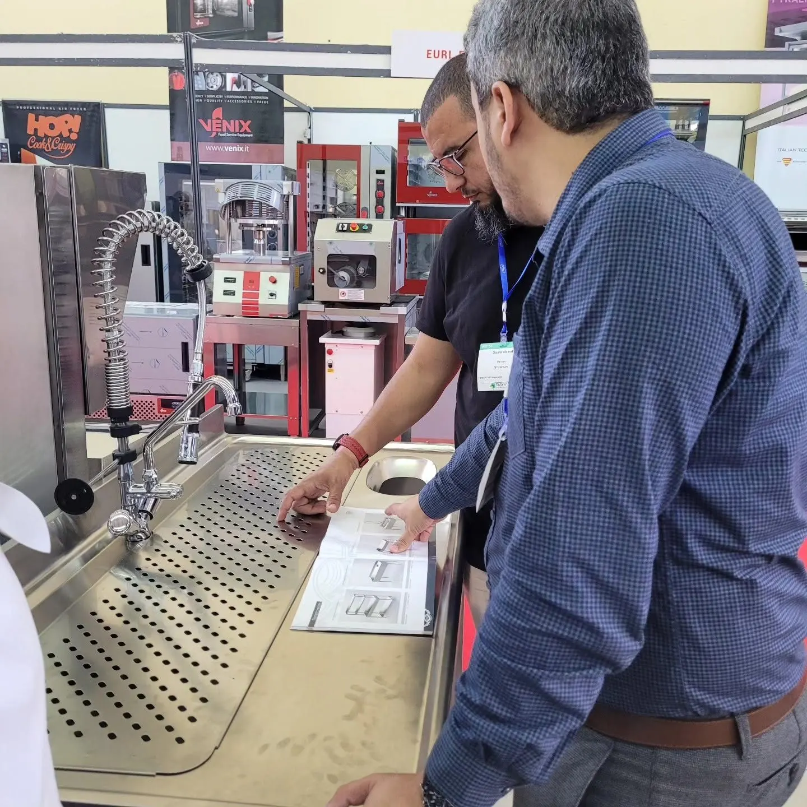

Nos réalisations
Accueil / Réalisations









Et aussi : Sonatrach, Sheraton, Hotel Marriott, Radisson Blu Hôtel, IBIS Hotels, Liberté Hôtel Oran, Air Algérie Catering, Cegelec, CSCEC, ENAGEO, ENAFOR, Palmary, ambassades des États-Unis, d’Italie et du Canada.